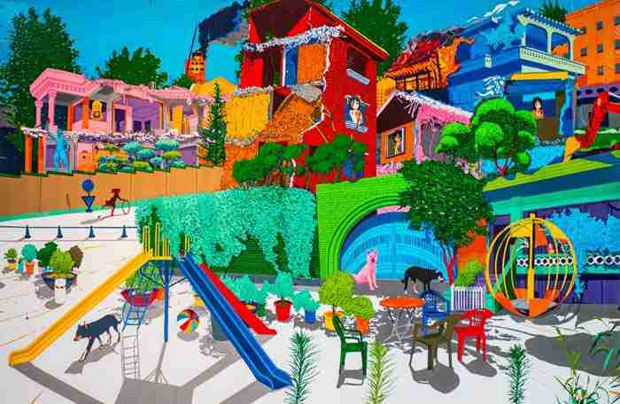

미술관 소장품을 중심으로 한국현대미술사의 중요한 맥락을 밝히는 연구물을 생산하고 출판합니다.
SEMA 소장품
서울시립미술관이 소장한 작품 6,158점을 살펴보세요.
미술아카이브
현대미술의 중요한 기록을 수집 보존 연구하고 전시합니다.
모두의 연구실 '코랄'
웹을 기반으로 지식 생산자와 사용자가 만나며 다양한 형태의 미술 지식을 탐구하여
미술 지식의 확장 가능성을 실험하는 공간입니다.
SEMA 도서와 자료
미술관이 소장하고 있는 미술 관련 도서의 정보를 제공합니다.